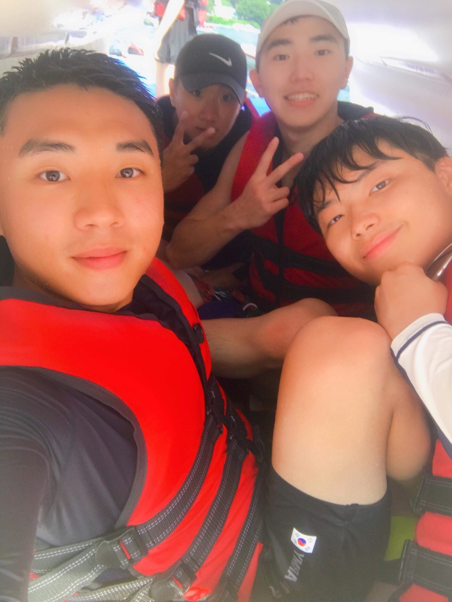
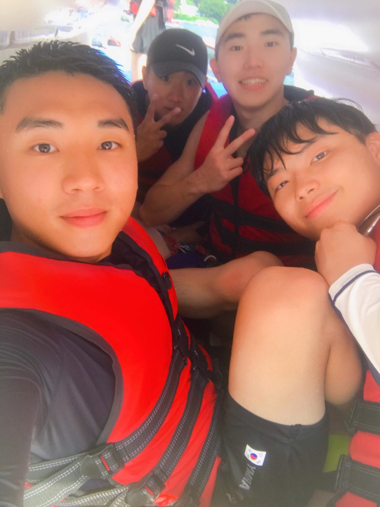

취미생활, 여름과 겨울에 즐기는 나의 취미
<Contents>
☞자기소개☜
 안녕하세요, 저는 가천대학교 응용통계학과 3학년 재학중인 24살 손종원이라고 합니다:)
안녕하세요, 저는 가천대학교 응용통계학과 3학년 재학중인 24살 손종원이라고 합니다:)
제 고향은 파주에 있는 문산이라는 곳이고 지금은 서울에서 자취를 하고 있어요^^
학교에서 국가근로장학생, 조교 일을 하고 있고 호프집 아르바이트도 합니다.. 힘들어요..ㅜ
저는 외향적이면서도 내향적인 성격을 갖고 있는 사람입니다!!!
밖에서 친구들과 시간을 보내는 것도 좋아하지만, 집에 누워서 하루종일 뒹굴거리는 것도 정말로 좋아해요~
코로나 시국에 어쩔 수 없이!!!! 집에 오래 있게 되면서 내향적인 성격이 생겼어요ㅎ 참 신기하죠?!
저의 장점은 사교성 !!끝판왕!!이라는 겁니다. 또 꼼꼼하고, 세심한 성격을 갖고 있어서 사람을 금방 알 수 있어요.
그런데, 그 부분이 오히려 단점이 될 때도 있어서 속상할 따름입니다....
하지만! 굴하지 하고 장점을 더 살리기 위해 항상 노력한답니다!
제가 여름과 겨울에 즐기는 취미생활.
한번 알아보러 가봅시다♬♬
☞여름 뿌시기☜
 당장 물에 들어가서 놀고 싶은 느낌.
당장 물에 들어가서 놀고 싶은 느낌.
여름에 많은 사람들이 찾는 수상레저 파크에요!
해가 쨍쨍하고 습한 여름에 단언컨대 물에서 있는게 최고!
저는 수상레저 파크에서 노는 것을 좋아하는 것은 물론이고,
수상레저 스포츠를 즐기는걸 진짜진짜 좋아해요!


그 중에서도 플라이피쉬, 와이드 플라이어, 땅콩보트는
줄 서서 기다리는 사람이 많아도 꼭 한번은 타는 걸 추천해요!
스릴만점 최고랍니다!!
◎수상레저 즐기는 나와 친구들◎
 
2019년도 여름에 저와 친구들이 놀러갔던 사진이고,

2019년도 여름에 저와 친구들이 놀러갔던 사진이고,
동영상은 저와 친구에요! 호흡이 엄청나죠?!
이렇게 수상레저 파크에서 재미있게 놀고,
수상레저 스포츠도 마음껏 즐겼습니다:)
여름을 제대로 뿌시고 왔었어요!!!!
☞겨울 뿌시기☜
 광활하게 펼쳐져 있는 스키장을 보면 마음이 시원 그자체.
광활하게 펼쳐져 있는 스키장을 보면 마음이 시원 그자체.
겨울이라면 빼놓을 수 없는 스키장!
저는 겨울이 되면 한 달에 한 번은 꼭 가요!
중학생 때까지는 스키를 탔는데
고등학생 때 보드가 멋있어 보여서 보드로 바꿨어요ㅋㅋ
스키와 보드를 모두 탈 수 있는 능력자!라고 할 수 있어요ㅎㅎ
◎스키장에서 즐기는 나와 친구들◎


 2019년도 겨울에 저와 친구들이 놀러갔던 사진이고,
2019년도 겨울에 저와 친구들이 놀러갔던 사진이고,
저희는 오후와 야간 모두 이용할 수 있는 리프트권을 끊어서
3명 다 보드를 열심히, 신나게 다리가 후들거릴 정도로 타고
숙소에 가서 뻗었던 기억이 있네요..! 정말 추억이네요....
◎나는야 보드맨◎
야간에 친구가 영상을 찍어 줬었어요!
직접 탈 때는 굉장히 빠르고 역동적이라고 느꼈는데..
영상에서는 그렇지 않아 보여서 많이 아쉬웠어요ㅠㅠ
정말 보드를 잘 타는 사람처럼 노력해야겠다고 다짐했어요!!
이렇게 겨울도 완벽히 뿌시고 왔었어요!!!!
☞여름, 겨울 다 뿌시기☜
 남녀노소 좋아하는 힙콘.
남녀노소 좋아하는 힙콘.
래퍼 또는 뮤지션들이 힙합 공연을 해요!
무대에서 공연하는 그들과 함께 즐기고
심지어 옆에 처음 본 사람과도 분위기에 심취해서 즐겨요!
땀도 내고! 스트레스도 풀고!
계절 상관없이 모두가 즐길 수 있는 힙합콘서트는 저에게 있어서 최고의 취미에요!
◎힙합콘서트 즐기는 나◎


2019년도 혼자서 "키드밀리" 단독 콘서트를
예매해서 홍대 무브홀에 갔었어요!
신나게 뛰어놀고 소리 지르고 하니까 스트레스가 확!
풀리고 유명한 래퍼들도 나와서 무대를 하는데
TV에서만 보던 사람들이 눈 앞에서 랩을 하니까
세상 멋져 보이고 신기한 경험을 느꼈었어요!
하고 싶은 말
 코로나 바이러스 때문에 많은 사람들이
코로나 바이러스 때문에 많은 사람들이
제대로 놀러 다니지도 못하고 힘들어하는 요즘
당연하다고 느꼈던 일상들이 소중하다고 느껴져요.
코로나가 종식 되어서 원래 일상을 되찾고
모든 사람들이 행복했으면 좋겠어요!!
제 이야기는 여기서 마치겠습니당~ 감사합니당~